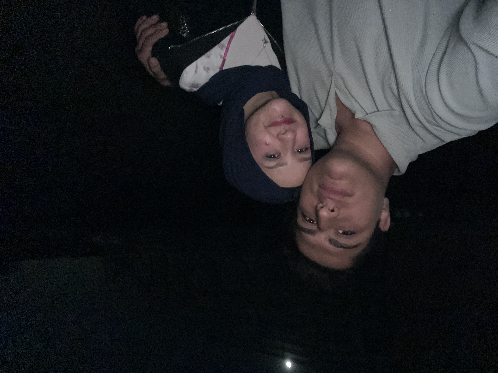
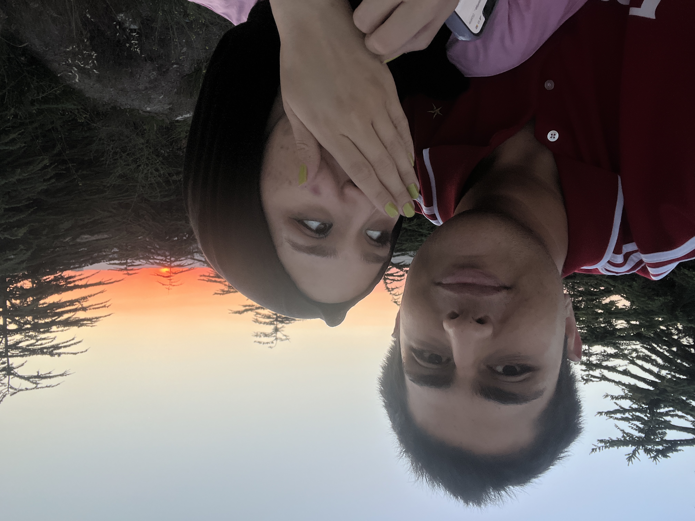
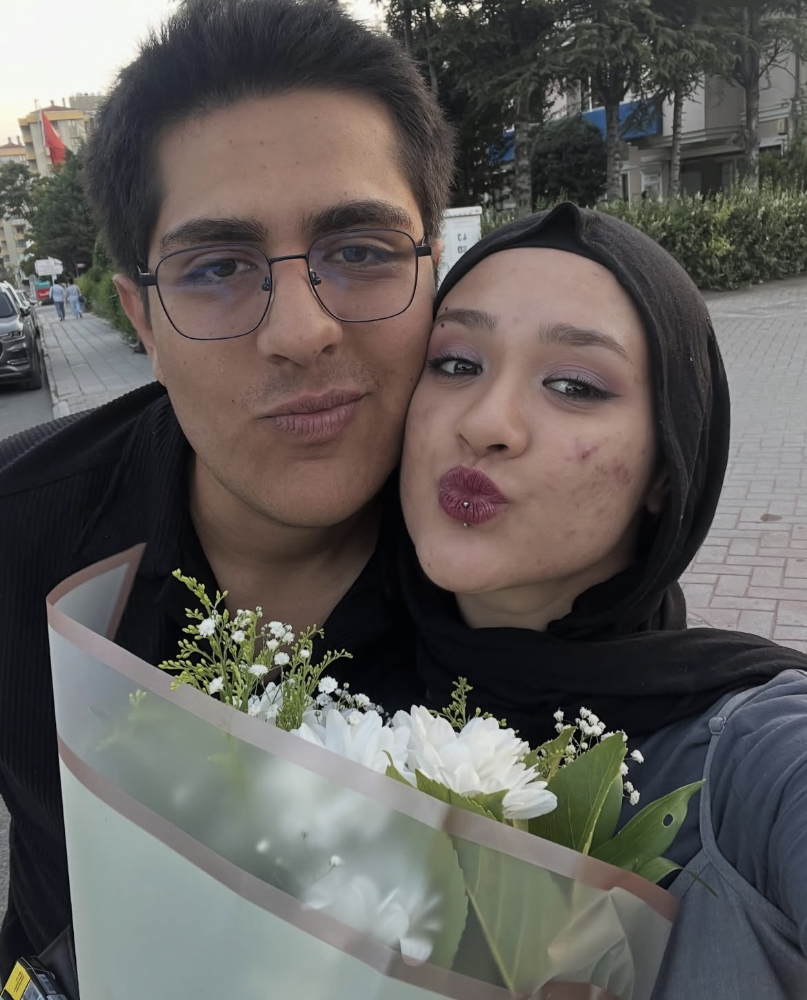
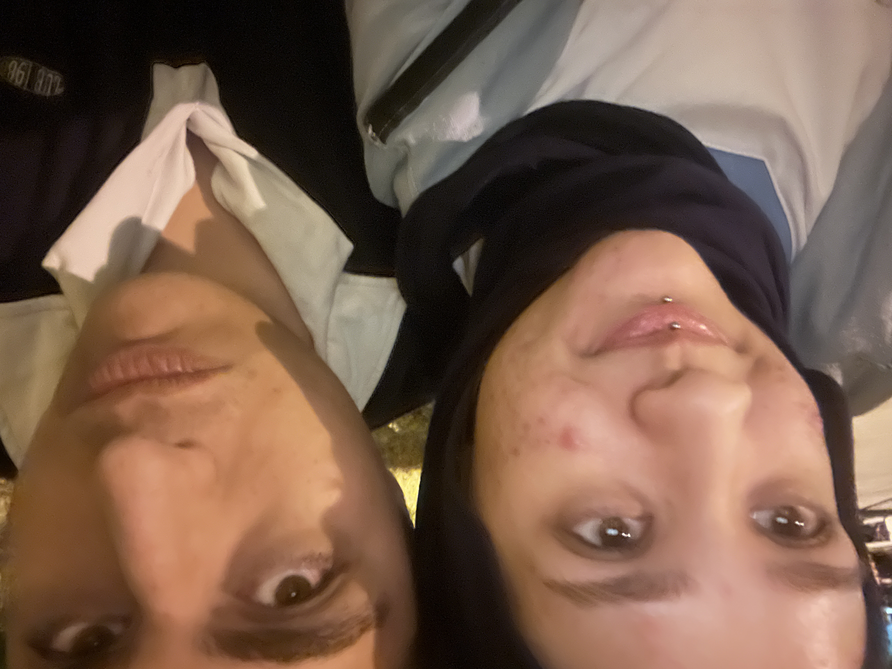
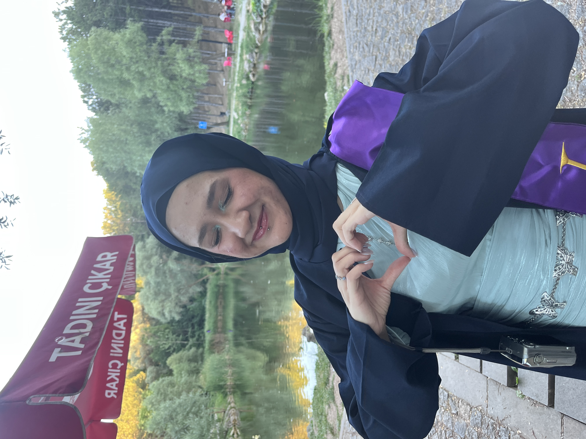
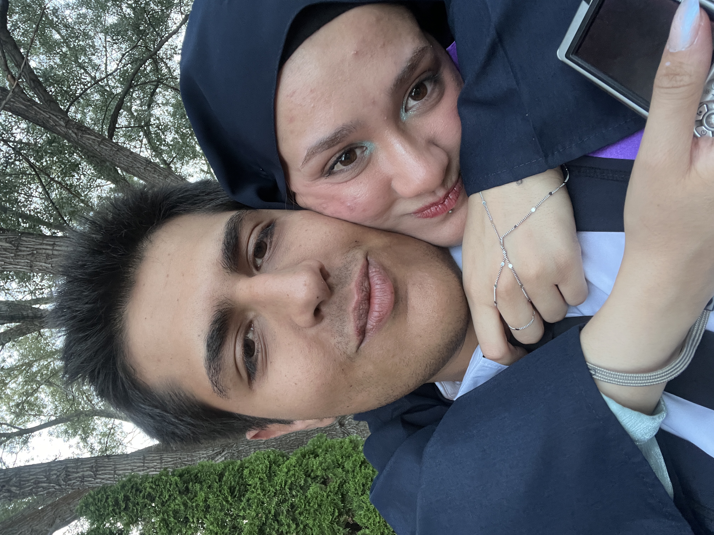

Sana Bir Mesaj Var!
❤️
Zarfı açmak için dokun
İyi ki Doğdun
Sevgilim!
Birlikte Nice Mutlu Yıllara...
Aşağı Kaydır ↓
Senin İçin Bir Mektup
Hayatın karşıma çıkardığı en güzel şanssın. Önümüzdeki yıllarda da ellerimiz hiç ayrılmasın, kahkahalarımız birbirine karışsın.
Beraber büyüyeceğimiz, yeni başarılar kutlayacağımız, dünyayı gezeceğimiz ve en zor anlarda bile birbirimize sığınacağımız nice mutlu yıllarımız olsun.
Seni Çok Seviyorum ❤️
Aşağı Kaydır ↓
Güzel Anılarımız...
Seninle geçen her gün, hayatıma kattığın anlamı biraz daha büyütüyor. Birlikte güldüğümüz, gezdiğimiz ve paylaştığımız her an benim için paha biçilemez.
İyi ki benimlesin.
Aşağı Kaydır ↓
Bizi Hatırlatan Şarkı



Aşağı Kaydır ↓



Beni dünyanın en şanslı insanı yaptığın için teşekkür ederim.
İyi ki doğdun!